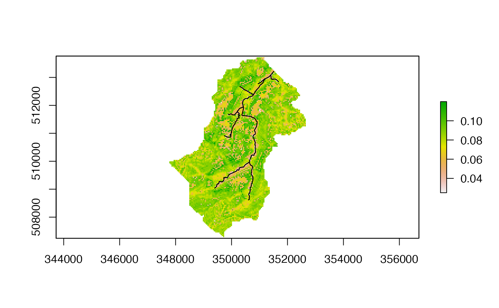
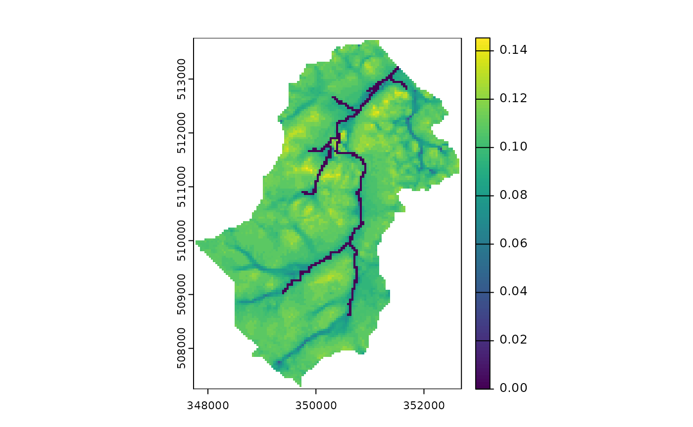
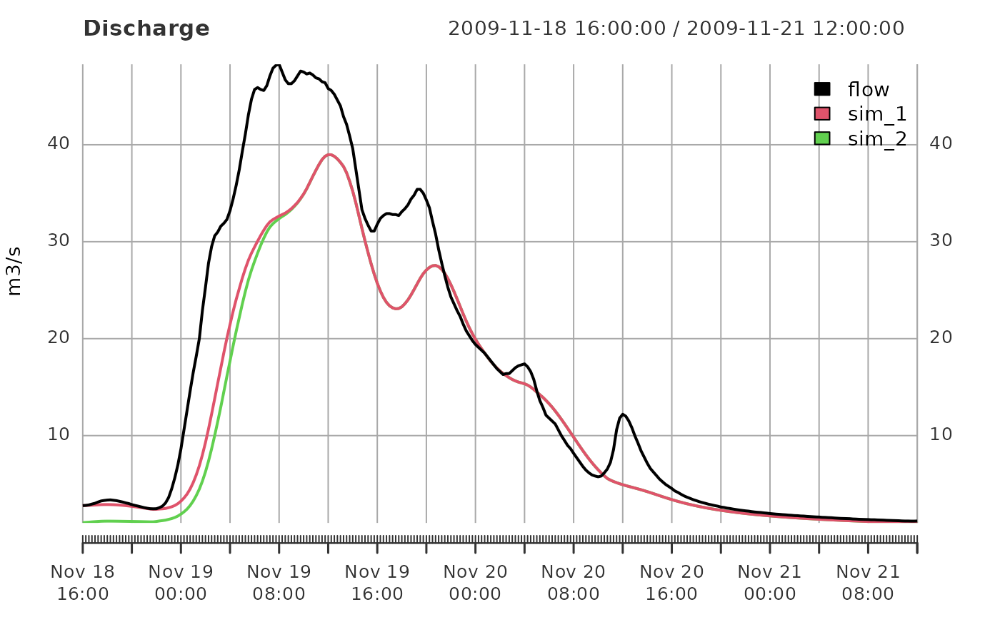
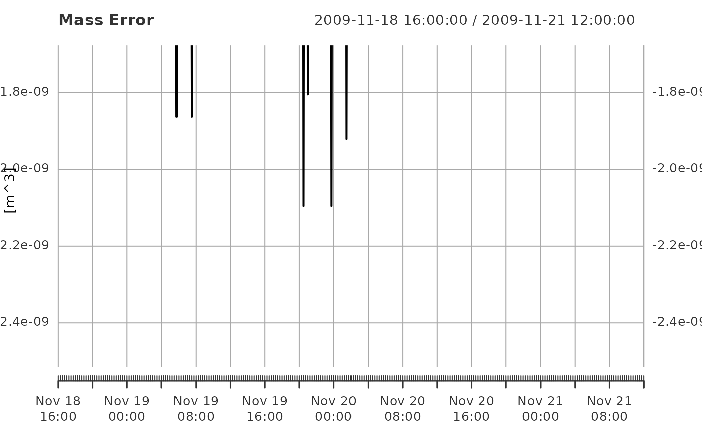

The purpose of this vignette is to provide an outline of the steps needed to perform a Dynamic TOPMODEL simulation and introduce the formats of the data input and returned.
The data used in this example comes from Swindale and is contained within the package and can be loaded with
which returns a variable Swindale with the following
components:
names(Swindale)
#> [1] "model" "obs"For better comparison with a likely analysis we separate these into a model and observed data variables
swindale_model <- Swindale$model
swindale_obs <- Swindale$obsA dynamic TOPMODEL is described in a list object. The list has the following elements
names(swindale_model)
#> [1] "hru" "output_flux" "map"which are described in associated vignette. The dynatopGIS package can be used for constructing models.
While not required for simulations if the locations of the files containing the locations of the HRUs are provided the states can be visualised within dynatop.
The locations of the files are set in the map element of
the model. For this example the maps are located within the
extdata directory of the package and can be set using
commands
swindale_model$map <- system.file("extdata","Swindale.tif",package="dynatop",mustWork=TRUE)The input to the model is expected to take the form of an
xts object with constant time step whose column names are
found in the ‘precip’ and ‘pet’ columns of the HRU tables in the model.
Helpful functions for creating and manipulating xts objects
can be found here,
see also the resample_xts function in this package.
The discharge, precipitation and potential evapotranspiration (PET)
inputs for Swindale are contained with swindale_obs on a 15
minute time step.
head(swindale_obs)
#> Warning: object timezone (GMT) is different from system timezone (UTC)
#> NOTE: set 'options(xts_check_TZ = FALSE)'to disable this warning
#> This note is displayed once per session
#> flow precip pet
#> 2009-11-18 16:00:00 2.78 4e-04 8.878467e-06
#> 2009-11-18 16:15:00 2.80 2e-04 4.762229e-06
#> 2009-11-18 16:30:00 2.85 4e-04 8.585708e-07
#> 2009-11-18 16:45:00 2.94 2e-04 0.000000e+00
#> 2009-11-18 17:00:00 3.02 2e-04 0.000000e+00
#> 2009-11-18 17:15:00 3.15 2e-04 0.000000e+00Note the discharge is in m\(^{3}\)/s while the precipitation and PET are in m accumulated over the time step.
To use the data with the model we need to set the names of the time
series inputs within the model. In this case this is already done as can
be seen by inspecting the precip and pet
values for the individual HRU’s
The parameter values are stored within the table describing the hillslope and channel HRUs. Which parameters are present depends upon the options selected for the transmissivity and channel solution. Details can be found in the HRU Vignettes.
Altering parameter values requires changing their values in the HRU definitions. For this catchment all HRU have the same parameter values. For this simulation we change the parameter vectors to be more representative of the catchment
hru <- swindale_model$hru
for(ii in 1:length(hru)){
if(is.na(hru[[ii]]$class$endNode)){
## then HRU is not a channel
## saturated zone parameters
hru[[ii]]$sz$parameters["m"] <- 0.0063
hru[[ii]]$sz$parameters["t_0"] <- exp(7.46)
## unsaturated zone parameters
hru[[ii]]$uz$parameters["t_d"] <- 8*60*60
## root zone parameters
hru[[ii]]$rz$parameters["s_rzmax"] <- 0.1
## surface parameters
hru[[ii]]$sf$parameters["c_sf"] <- 0.4
}else{
## then HRU is a channel - set so no subsurface response
## saturated zone parameters
hru[[ii]]$sz$parameters["t_0"] <- 0.001
## root zone parameters
hru[[ii]]$rz$parameters["s_rzmax"] <- 0.001
## surface parameters
hru[[ii]]$sf$parameters["c_sf"] <- 0.8
}
## initialisation parameters
hru[[ii]]$initialisation["s_rz_0"] <- 0.98
hru[[ii]]$initialisation["r_uz_sz_0"] <- 1.755582e-07 ## initial outflow divided by catchment area
}Simulations are performed by embedding the model and the observed
data into a dynatop object. First the object is created
using the model in list form
ctch_mdl <- dynatop$new(hru,map=swindale_model$map)This step performs some basis checks on the model for consistency. The data can then be added
ctch_mdl$add_data(swindale_obs)The model currently consists of two types of HRU; hillslope and
channel. These can be run individually with the
sim_hillslope and sim_channel methods or
sequentially with the sim method. The individual methods
check that suitable input data is available, but not how it was
generated.
The initial states of the simulations can be specified in the model object. If, as in the case of this example, the states are not specified then any attempt to perform a simulation will fail.
ctch_mdl$sim(swindale_model$output_flux)
#> Warning in private$digest_output_defn(output_defn): Output definition does not
#> have scale - adding a vector of 1's
#> Error in ctch_mdl$sim(swindale_model$output_flux): Model states have non-finite valuesThe states need to be initialised using the initialise
method which requires an initial recharge rate. In the following we
initialise the states and plot the initial saturated zone storage
deficit, using the chaining of commands.
ctch_mdl$initialise()$plot_state("s_sz")
The simulation can now be performed and the flow at the gauge extracted with
sim1 <- ctch_mdl$sim(swindale_model$output_flux)$get_output()
#> Warning in private$digest_output_defn(output_defn): Output definition does not
#> have scale - adding a vector of 1'sNote that the states of the system are now those at the end of the simulation for example:
ctch_mdl$plot_state("s_sz")
Rerunning the simulation with the new initial states will of course produce different results. Output for the above examples can be plotted against observed discharge for comparison as follows:
sim2 <- ctch_mdl$sim(swindale_model$output_flux)$get_output()
#> Warning in private$digest_output_defn(output_defn): Output definition does not
#> have scale - adding a vector of 1's
out <- merge( merge(swindale_obs,sim1),sim2)
names(out) <- c(names(swindale_obs),'sim_1','sim_2')
plot(out[,c('flow','sim_1','sim_2')], main="Discharge",ylab="m3/s",legend.loc="topright")
It is possible to output the mass balance check for each time step of
the simulation using the get_mass_errors method. The
returned matrix gives the volumes in the states at the start and end of
the time step along with the other fluxes as volumes. This can easily be
used to plot the errors as shown below.
mb <- ctch_mdl$get_mass_errors()
plot( mb[,6] , main="Mass Error", ylab="[m^3]")